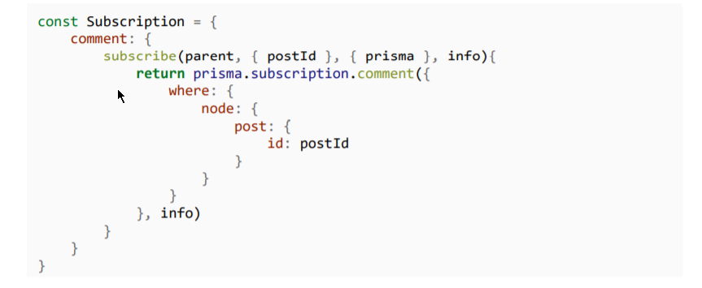

Before prisma in order to make a subscription we had to make several calls to pubsub.publish throughout our resolver functions. However with the addition of prisma, subscription is handled under the hood. All we need to do is call prisma.subscription

Now, if you see the schema of prisma, it returns everything (the updated data in node field) so we make changes to our schema accordingly
This is how our schema looks now